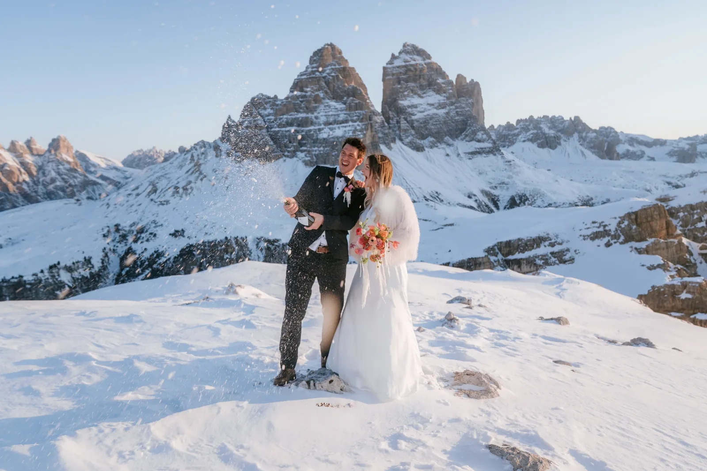

Imagináis un elopement que una aventura y romance en los impresionantes Dolomitas. Nuestra especialidad es crear elopements de montaña inolvidables, hechos a la medida de vuestra visión.
Empezamos ayudándoos a elegir el lugar perfecto — según accesibilidad, paisaje y ambiente. Ya soñéis con daros el sí en una cumbre apartada o junto a un lago alpino, cada detalle gira en torno a vosotros dos.
Cuando el día pide más manos, trabajamos con un círculo de confianza: planificación sobre el terreno por Dolomites Wedding Planner, fotografía por Blitzkneisser.

Cumbre, lago, prado o cresta — elegimos el escenario según vuestra visión, la estación y cuánto queréis caminar.
Un plan relajado, la mejor luz, un plan flexible para el clima y toda la logística — traslados, flores, peluquería y maquillaje.
Votos personales, un oficiante o ceremonia civil opcional, y una fotografía que lo captura tal como se sintió.
Un punto de partida sereno para parejas que planean un elopement en los Dolomitas o una boda con intención en la montaña — y quieren una idea más clara de por dónde empezar.


Nuestra planner en los Dolomitas — logística, permisos, alojamiento y cada detalle resuelto sobre el terreno, para que solo tengáis que estar presentes. Con años de experiencia y criada en el corazón de los Dolomitas, conoce cada piedra — lo que crea un ambiente maravillosamente relajado.
Dolomites Wedding Planner →Fundador y fotógrafo principal — tirolés, en casa entre Innsbruck y las Dolomitas. Premiado (Way Up North Awards 2024), publicado en Rangefinder. Andreas guía a cada pareja hacia la luz y captura el día tal como se siente.
Blitzkneisser →Usamos cookies para estadísticas anónimas (Google Analytics vía Google Tag Manager) para mejorar el sitio. La analítica solo se activa con tu consentimiento. Política de privacidad